4 A first tutorial: Developing a simple counter
To start off in Pharo, let's write a simple counter by following the steps given below. In this exercise you will learn how to create packages, classes, methods, instances, unit tests and more. This tutorial covers most of the important actions you will perform when developing in Pharo. You can also watch the companion videos available in the Pharo MOOC at http://mooc.pharo.org, which help illustrate this tutorial (they are called yy-Redo-xxx). We will also show you how to save your code with git hosting services such as GitHub using Iceberg.
Note that the development flow promoted by this little tutorial is traditional in the sense that you will define a package, a class, then define its instance variables, then define its methods, and then finally execute it. Now in Pharo, developers usually follow a different workflow called Extreme Test-Driven Development: they execute an expression that raises an error. These errors are caught by the Debugger and the developer codes directly in the debugger, allowing the system to define instance variables and methods on the fly for them.
Once you finish this tutorial, and you feel more confident in Pharo, we strongly suggest you do the exercise again using TDD: define and write a test, execute it, write the code to make the test pass and loop. In Pharo you can also use Extreme TDD: define and write a test, execute it, write the code in the debugger to make the test pass. Extreme TDD is a super powerful approach. However, you cannot really get the real feeling of it without actually doing it yourself. There is another video in the Pharo mooc showing this powerful approach of coding. We really urge you to have a look at it and practice.
4.1 Our use case
Here is our use case: We want to be able to create a counter, increment it twice, decrement it and check that its value is as expected. The following example shows this in action, and will make a perfect unit test - you will define one later.
| counter |
counter := Counter new.
counter increment; increment.
counter decrement.
counter count = 1We will write all of the necessary classes and methods to support this example.
4.2 Create a package and class
In this part, you will create your first class. In Pharo, a class is defined in a package, so we'll need to create a package first to put the class in. The steps are the same every time we create a class, so pay attention.
Create a package
Use the Browser to create a package (right-click in the package pane, select New Package). The system will ask you for a name, write MyCounter. This new package is then created, added to the package list, and selected by default.
Create a class
The lower pane of the Browser should now be open with a tab showing the template for a class definition. To create a new class, you just need to edit this template and compile the class.
Object << #MyClass
slots: {};
package: 'MyCounter'There are three parts you might want to change:
- Superclass. This describes the superclass of the class you're creating. It defaults to
Object, the least specialized of all classes in Pharo, which is what we want for our new Counter class. This won't always be the case: often you'll want to base a class on a more specific class. - Class Name. Next, you should fill in the name of your class by replacing
#MyClasswith#Counter. Take care that the name of the class starts with a capital letter and that you do not remove the#sign in front of#Counter. This is because we name our classes using a Symbol, a unique string in Pharo which we write starting with a#. - Slots. Then, you should fill in the names of the instance variables, also called slots, of this class. We need only one instance variable called
#count. - Package. Here you specify the package name.
You should get the following class definition:
Object << #Counter
slots: { #count };
package: 'MyCounter'We now have a class definition for the class 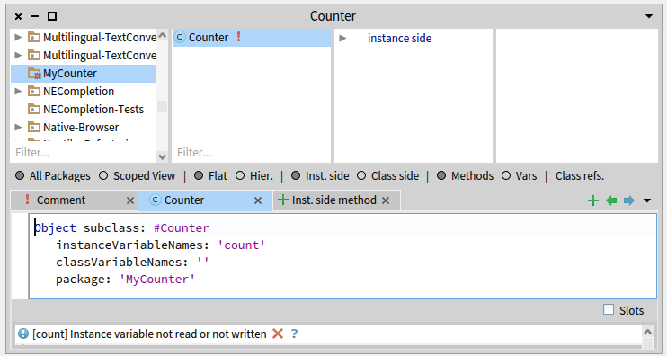Counter. To define it in our system we still have to compile it - either through the context menu in the lower panel, or the shortcut Cmd-S. The class Counter is now compiled and immediately added to the system.
Figure 4.1 illustrates the resulting situation that the browser should show.
Object class and has one instance variable named count.Counter class by clicking the Comment pane and the Toggle Edit / View comment toggle. You can write the following comment:
`Counter` is a simple concrete class which supports incrementing and decrementing.
Its API is
- `decrement` and `increment`
- `count`
Its creation message is `startAt:`Comments are written in Microdown, a dialect of Markdown that should be quite intuitive. They render nicely in the Browser. Again, accept these changes either through the menu or by hitting 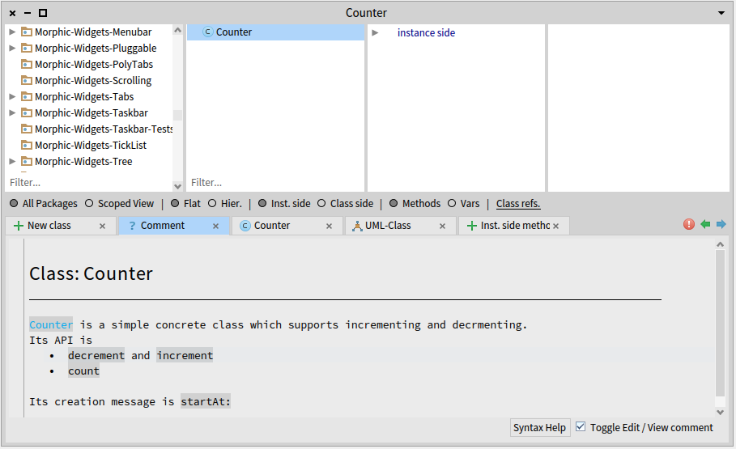Cmd-S.
Figure 4.2 shows the class with its comment.
4.3 Defining protocols and methods
In this part you will use the Browser to learn how to add protocols and methods.
The class we have defined has one instance variable named count, and we're going to use that variable to keep count. We'll increment it, decrement it, and show its current value. But in Pharo we need to remember three things:
- Everything is an object
- Instance variables are completely private to the object
- The only way to interact with an object is by sending messages to it
And so there is no other mechanism to access our instance variable from outside of our counter than by sending a message to the object. What must do is define a method that returns the value of the instance variable. Such methods are called getter methods. So, let's define an accessor method for our instance variable count.
A method is usually placed into a protocol. These protocols are just a group of methods - they have no meaning in Pharo, but they do convey important information to the readers of your class. Although protocols can have any name, Pharo programmers follow certain conventions when naming protocols. If you define a method and are not sure what protocol it should be in, first take a look through existing code and see if you can find an appropriate protocol that already exists.
4.4 Create a method
Now let us create the getter method for the instance variable 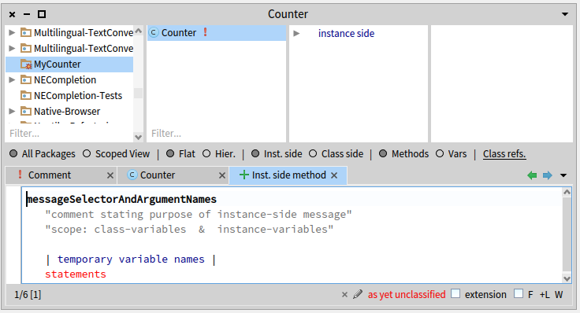count. Start by selecting the class Counter in a Browser, and make sure you are editing the instance side of the class (i.e., we define methods on instances of our class) by selecting the instance side tab. Then define your method.
Figure 4.3 shows the method editor ready to define a method.
count
^ countThis defines a method called 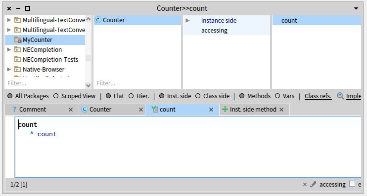count, which takes no arguments and returns the value of the instance variable count. Then choose accept in the menu to compile the method. The method is automatically categorized in the protocol accessing.
Figure 4.4 shows the state of the system once the method is defined.
count defined in the protocol accessing.
Counter new count
>>> nilThis expression first creates a new instance of Counter, and then sends the message count to it. It retrieves the current value of the counter. This should return nil (the default value for non-initialized instance variables). Afterwards we will create instances with a reasonable default initialization value.
4.5 Adding a setter method
Complementing the getter method we find the setter method. These are used to change the value of an instance variable from outside the object. For example, the expression Counter new count: 7 first creates a new Counter instance and then sets its value to 7 by sending it the message count: 7. Getters and setters are collectively referred to as accessor methods.
This example shows a setter method in action:
| c |
c := Counter new count: 7.
c count
>>> 7The setter method does not currently exist, so as an exercise create the method count: such that, when invoked on an instance of Counter, the instance variable is set to the argument of the message. Test your method by evaluating the example above in a Playground.
4.6 Define a Test Class
Writing tests - whether you do it before or after you write your code - isn't really optional these days. A collection of well-written tests will support the evolution of your application, and give you confidence that your program does the things you expect it to do. Writing tests for your code is a good investment; test code is written once and executed a million times. For example, if we turned the example above into a test we could have checked automatically that our new setter method is working as expected.
Our test cases, written as methods, need to live inside a test class that inherits from TestCase. So we define a class named CounterTest as follows:
TestCase << #CounterTest
package: 'MyCounter'Now we can write our first test by defining a method. Test methods should start with test to be automatically executed by the Test Runner or to get the little clickable circle next to the method name that lets you run the test.
Figure 4.5 shows the definition of the method testCountIsSetAndRead in the class CounterTest.
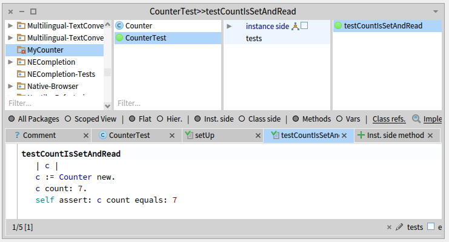
Define the following method for our test case. It first creates an instance of a Counter, sets its value and then verifies that the value has been set. The message assert:equals: is a message implemented in our test class. It verifies a fact (in this case that two objects are equal), and will fail the test if the fact isn't true.
CounterTest >> testCountIsSetAndRead
| c |
c := Counter new.
c count: 7.
self assert: c count equals: 7A typographic convention
Pharoers frequently use the notation ClassName >> methodName to identify the class to which a method belongs. For example, the count method we wrote above in our class Counter would be referred to as Counter >> count. Just keep in mind that this is not exactly Pharo syntax, but more like a convenient notation we use to indicate "the instance method count which belongs to the class Counter".
From now on, when we show a method in this book, we will write the name of the method in this form. Of course, when you actually type the code into the browser, you don't have to type the class name or the >>; instead, you just make sure that the appropriate class is selected in the class pane.
Verify that the test passes by executing either pressing the circle icon in front of the method (as shown by Figure 4.5) or using the Test Runner.
As you now have your first green test, it's a good time to save your work.
4.7 Saving your code as a git repository with Iceberg
Saving your work in the Pharo image is good, but it's not ideal for sharing your work or collaborating with others. Much of modern software development is mediated through git, an open-source version control system. Services such as GitHub are built on top of git, providing places where developers can work together building open source projects - like Pharo! Pharo works with git through the tool Iceberg. This section will show you how to create a local git repository for your code, commit your changes to it, and also push those changes to a remote repository such as GitHub.
Open Iceberg
Open Iceberg through the Sources menu, or by hitting Cmd-O,I.
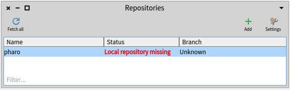
You should now see something similar to Figure 4.6 which shows the top-level Iceberg pane. It shows the Pharo project, and a few other projects that also come with your image, and indicates that it could not find a local repository for them by showing 'Local repository missing'. You do not have to worry about the Pharo project or having a local repository if you do not want to contribute to Pharo. We're going to create a new project of our own.
Add and configure a project
Press the button Add to create a new project. Select 'New Repository' from the left and you should see a configuration pane similar to the one in Figure 4.7. Here we name our project, declare a directory on our local disk where the project's source should be saved, and also a subdirectory in the project itself which will be used to keep the Pharo code in - conventionally this is the src directory.
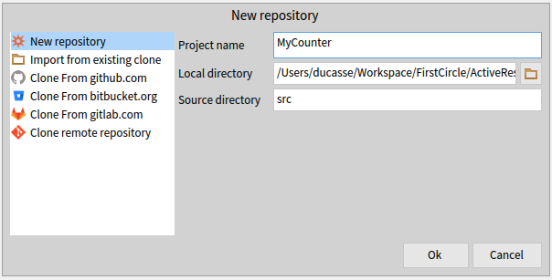src subdirectory.
Add your package to the project
Once added, the Iceberg Working copy browser should show you an empty pane because we still haven't added any packages to our project. Click on the Add package button and select the package MyCounter as shown by Figure 4.8.
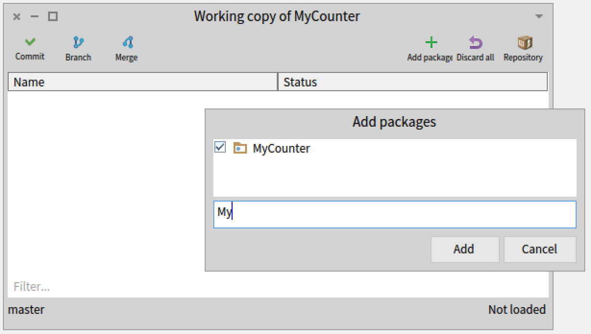
Commit your changes
Once your package is added, Iceberg shows you that there is uncommitted code in the packages managed by your project, as shown in Figure 4.9. Press the Commit button. Iceberg will show you all the changes that are about to be saved (Figure 4.10). Enter a commit message and commit your changes.
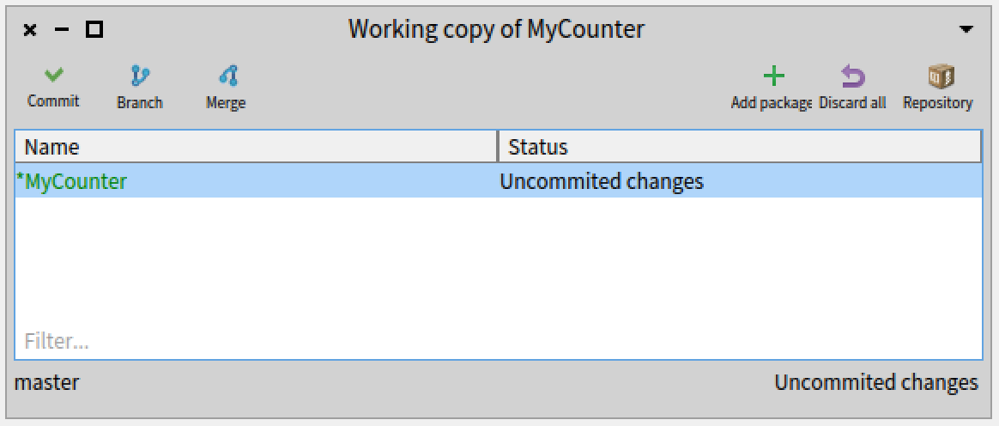
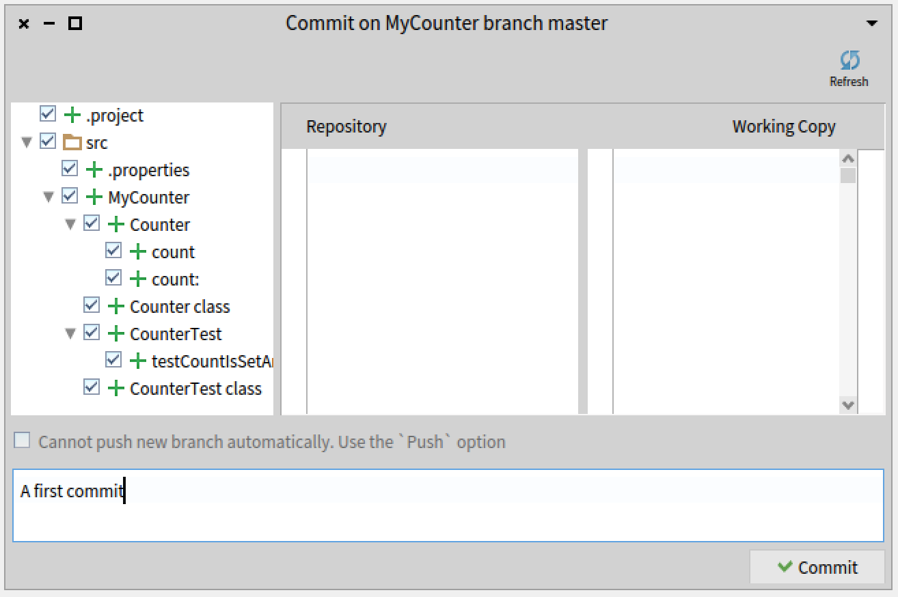
Code saved
Once you have committed, Iceberg indicates that your system and local repository are in sync.
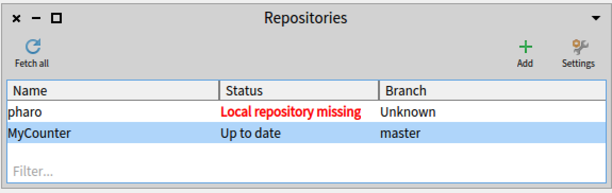
Nicely done! We'll take a look at how to push these changes to a remote repository in a bit. But for now let's get back to our Counter.
4.8 Adding more messages
We're going to test-drive the following messages for our Counter class. First, here's a test for the increment message:
CounterTest >> testIncrement
| c |
c := Counter new.
c count: 0 ; increment; increment.
self assert: c count equals: 2Now you try it! Write a definition for the method increment that makes the test pass.
And when you've done that, try and write a test for the message decrement, then make it pass by implementing the method on the Counter class.
Solution
Counter >> increment
count := count + 1Counter >> decrement
count := count - 1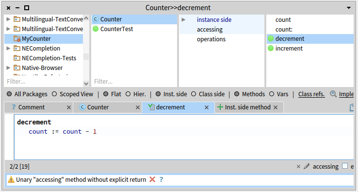
Your tests should all pass (as shown in Figure 4.12). Again, this is a good moment to save your work. Saving at point where tests are green is always good practice. To save your changes, you just have to commit them using Iceberg.
4.9 Instance initialization method
Right now the initial value of our counter is not set as the following expression shows:
Counter new count
>>> nilLet's write a test that asserts that a newly created Counter instance has 0 as the count:
CounterTest >> testInitialize
self assert: Counter new count equals: 0This time the test will turn yellow, indicating a test failure - the test ran fine, but the assertion did not pass. This is different to the red tests we've seen so far, where the tests have failed because an error occurred (when a method has not been implemented, for instance).
4.10 Define an initialize method
Now we have to write an initialization method that sets a default value of the count instance variable.
In Pharo, when creating a new object sending the message new to a class, the newly created instance is sent a message initialize. This gives the opportunity to the instance to initialize itself.
Therefore we will define an initialize method that will correctly initialize the default value of a counter.
Since the initialize message is sent to a new instance, it means that the initialize method should be defined on the instance side, just like any method that is sent to an instance of Counter (increment and decrement). The initialize method is responsible for setting up the default values of instance variables.
And so, on the instance side of Counter, and in the initialization protocol, write the following method (the body of this method is left blank. Fill it in!).
Counter >> initialize
"set the initial value of count to 0"
"Your code here""If you do this right, our testInitialize test will now pass.
As always, save your work before moving on to the next step.
4.11 Define a new instance creation method
We just discussed how the initialize method is defined on the instance side of our class, as it is responsible for altering an instance of Counter. Now let's take a look at defining a method on the class side of a class. Class methods will be executed as a result of sending messages to the class itself, rather than to instances of the class. To define the method on the class, we need to toggle the Code Browser over to the class side by selecting Class side.
Define a new instance creation method called startingAt:. This method receives an integer as an argument and returns a new instance of Counter with the count set to the specified value.
What do we do first? Why, we define a test of course:
TestCounter >> testCounterStartingAt5
self assert: (Counter startingAt: 5) count equals: 5Here the message startingAt: is sent to the class Counter itself.
Your implementation should look something like:
Counter class >> startingAt: anInteger
^ self new count: anInteger. Here we see the notation for identifying a class side method in our text: ClassName class >> methodName just means "the class side method startingAt: on the class Counter".
What does self refer to here? As always, self refers to the object that the method is defined in, and so here it refers to the Counter class itself.
Let's write another test just to make sure that everything is working:
CounterTest >> testAlternateCreationMethod
self assert: ((Counter startingAt: 19) increment ; count) equals: 204.12 Better object description
When you inspect a Counter instance, either through the Debugger or through opening an Inspector with Cmd-I on a Counter new expression, or even when you just run a Print it on a Counter new, you will see a very simplistic representation of your counter; it will just say 'a Counter':
Counter new
>>> a CounterWe would like a much richer representation, one that, for example, shows the counter's value. Implement the following method under the protocol printing:
Counter >> printOn: aStream
super printOn: aStream.
aStream nextPutAll: ' with value: ', count printString.Note the message printOn: is sent to any object when it is printed using Print it (See Figure 4.13) or inspected in an Inspector. By implementing the method printOn: on instances of Counter we can control how they are displayed, and we override the default implementation defined in the Object class, which has been doing all the work up until now. We'll look at these ideas in more detail, as well as learn more about streams and super, later in the book.
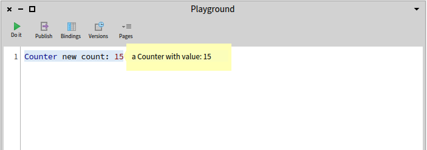
In this case we'll let you define a test case for this method. A tip: send the message printString to Counter new to get its string representation, as generated by printOn:.
Counter new printString
>>> a Counter with value: 0Now let's save our code again, but this time on a remote git server.
4.13 Saving your code on a remote server
Up until now you saved your code on your local disc. We will now show how you can save your code on a remote git repository such as the one you can create on GitHub http://github.com or GitLab.
Create a project on the remote server
First you should create a project on your remote git server. Don't put anything in it! Things could get confusing. Name it something simple and obvious like "Counter" or "Pharo-Counter". This is the place we're going to send our Iceberg project to.
Add a remote repository in HTTPS access
In Iceberg, go to the Working Copy browser of your Counter repository by double-clicking on the repository. Then click on the icon that looks like a box, labeled Repository. This opens the Repository browser for the project, as shown in Figure 4.14.
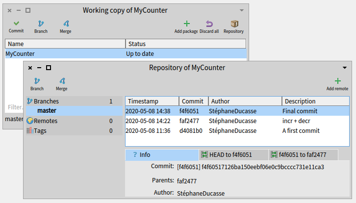
Then you just have to add a remote repository for the project, which is as simple as clicking the big plus icon marked Add remote. You will be asked to give a name for the remote, which is just the label that git uses locally to identify it, and a URL for the remote. You can use HTTPS access (a URL that starts with https://github.com for GitHub), or SSH access (a URL that starts with git@github.com). SSH will require you to set up your SSH agent on your machine with the correct credentials (please consult your git remote provider for the details of how to achieve this). HTTPS will require you to use your git token. See in Figures 4.15 and 4.16 for using HTTPS.
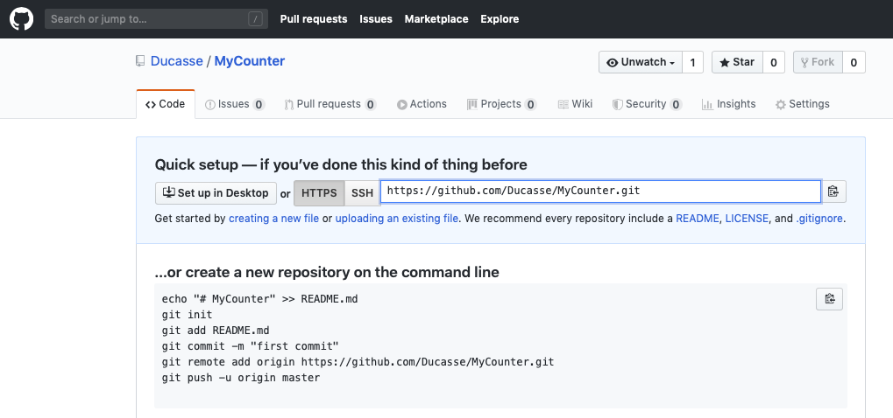
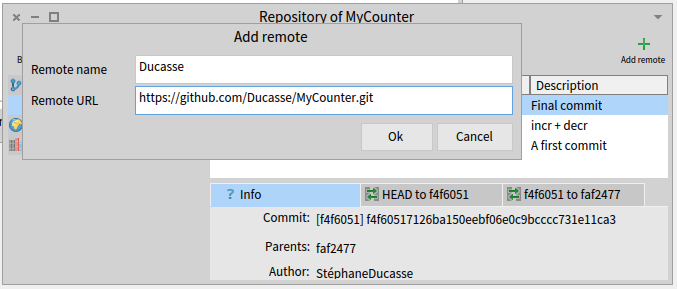
Push
As soon as you add a valid server address, Iceberg will show a small red indicator on the Push button. This shows that you have changes in your local repository that have not yet been pushed to your remote repository. Al you have to do is press the Push button; Iceberg will show you the commits that will be pushed to the server as shown in Figure 4.17.
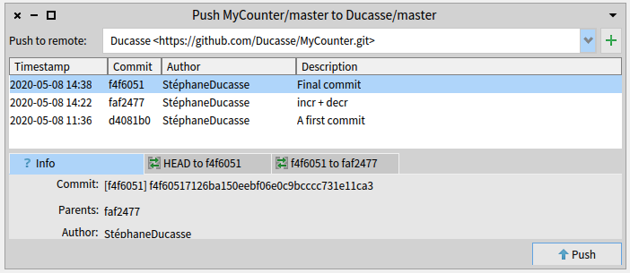
Now you really saved your code will be able to reload from another machine or location. This skill will enable you to work remotely, and to share and collaborate with others.
4.14 Conclusion
In this tutorial, you learned how to define packages, classes, methods, and tests. The workflow of programming that we chose for this first tutorial is similar to most programming languages. However, in Pharo, smart and agile developers use a different workflow: Test-Driven Development (TDD). We suggest you redo this whole exercise by defining a test first, executing it, defining a method in the debugger, and then repeating. Watch the second "Counter" video of the Pharo MOOC available at http://mooc.pharo.org to get a better understanding of the workflow.